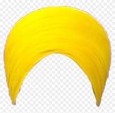
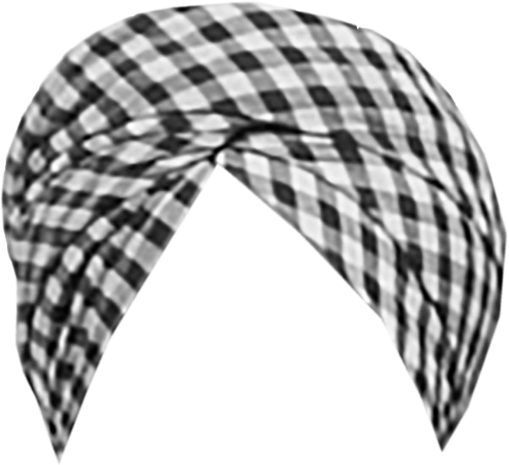
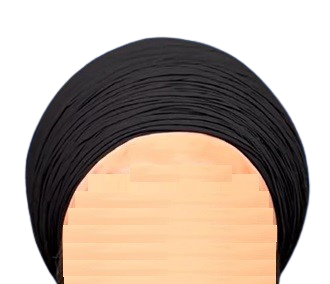
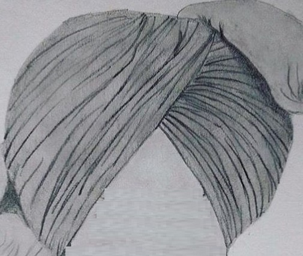
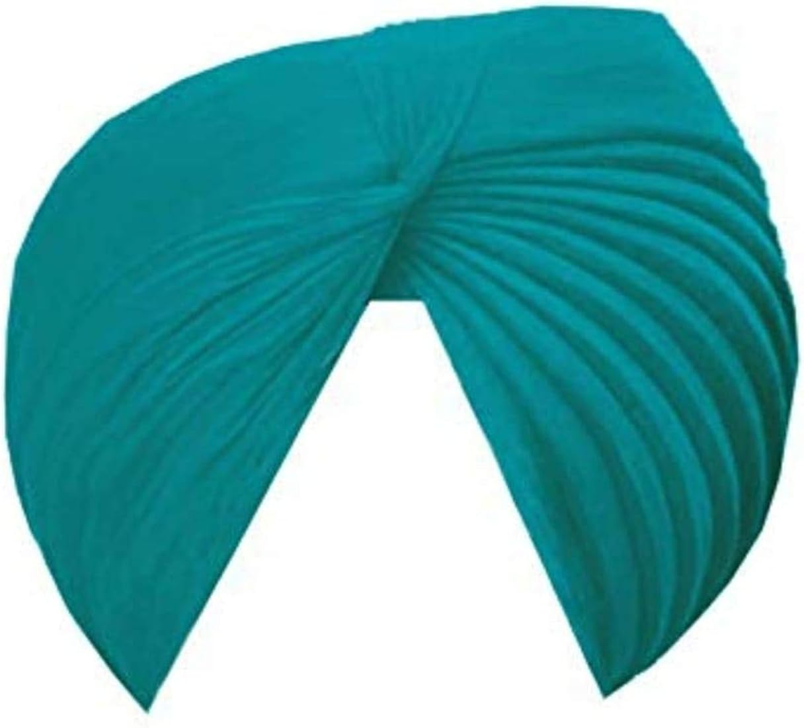
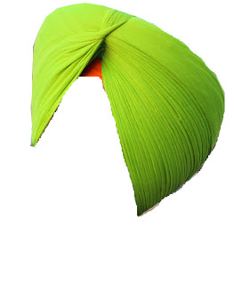
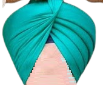
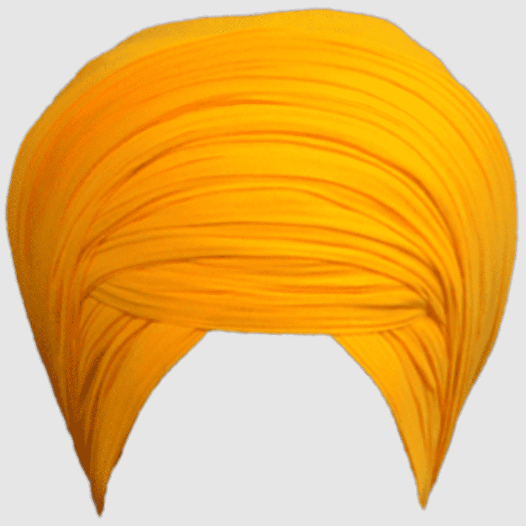
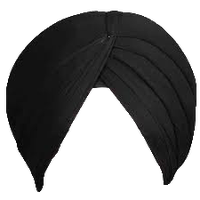
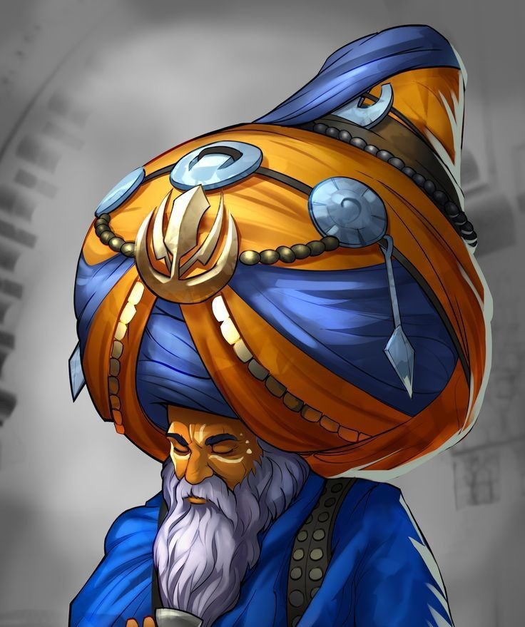

The Significance of the Turban in Sikh Culture
The turban in Sikhism is far more than cloth — it is a marker of identity, a spiritual crown and a public statement of commitment to Sikh values: equality, service and justice.
Religious & Cultural Significance
- Identity: A visible sign of Sikh identity and principles.
- Equality: Wearing the turban rejects caste-based status and affirms equality.
- Spirituality: Considered a crown; worn with reverence.
- Respect & Dignity: Symbolises discipline and honour.
Practical Aspects
- Protection: Shields against sun, dust and cold historically.
- Hair care: Keeps uncut hair tidy and respected as sacred.
Social & Political Context
The turban also plays a role in visibility and civil rights. Sikhs sometimes face misunderstanding or discrimination because of their appearance; the turban has therefore become a symbol of resilience and assertion of religious freedom.
The History of the Sikh Turban
While turban traditions existed across South and Central Asia long before Sikhism, the turban acquired special meaning within Sikhism. In the late 17th century, Guru Gobind Singh created the Khalsa to defend the oppressed and to remove caste distinctions. As a visible equaliser, members of the Khalsa were instructed to wear the turban — a practice which affirmed dignity regardless of birth status.
Guru Gobind Singh also asked members of the Khalsa to adopt common last names — Singh for men and Kaur for women — to further remove caste markers and to ensure women retained independent identity.
Components, Styles & Colors
Turbans are made from long pieces of cloth (commonly cotton) and can be tied in many regional and personal styles.
Common elements
- Cloth: Long fabric strips (cotton, sometimes silk).
- Styles: Dastar, pagri, keski and many local variations.
- Color: Color choices range by preference and occasion.
List of Common Styles
Parna — Gol Dastar (Round)

Pagg Style Parna

Parna — Two Meters

Watta Wali Dastar (Wrinkled)

Patiala Shahi (Royal)

Barnala Shahi1

Pochvi
Morni Style (Flared)

Dumalla (Spiritual / Warrior)

Simple Modern Pagg

Nihang Turban
